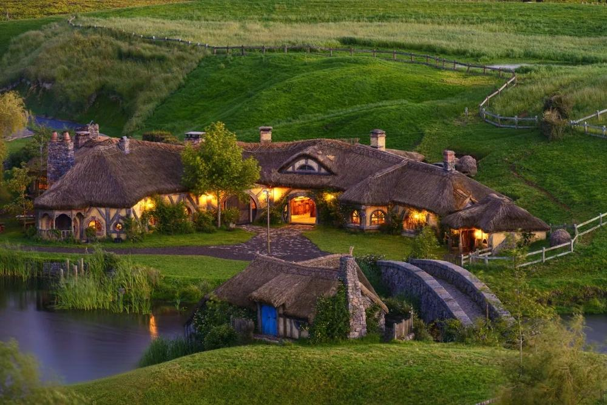
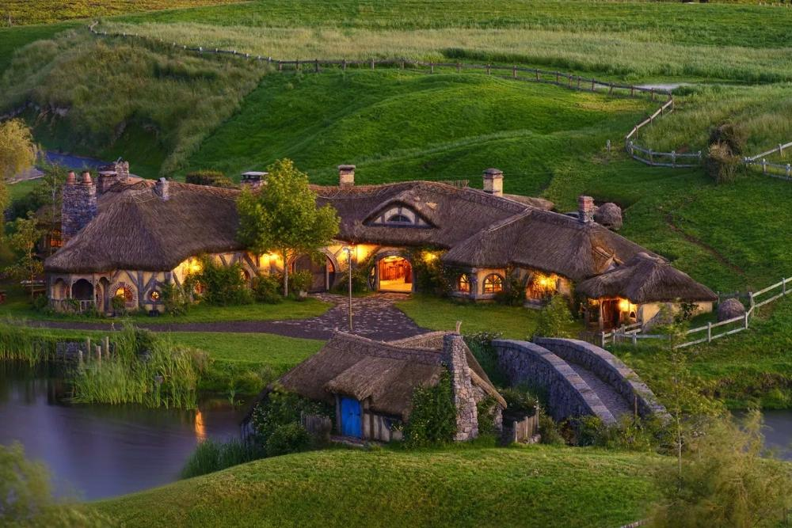
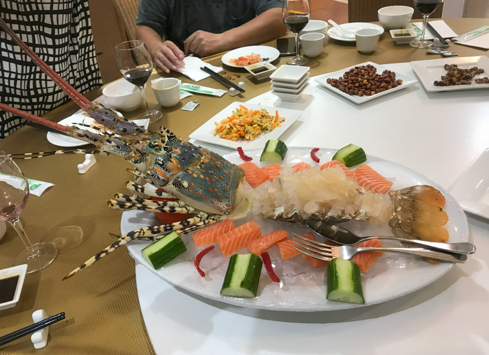
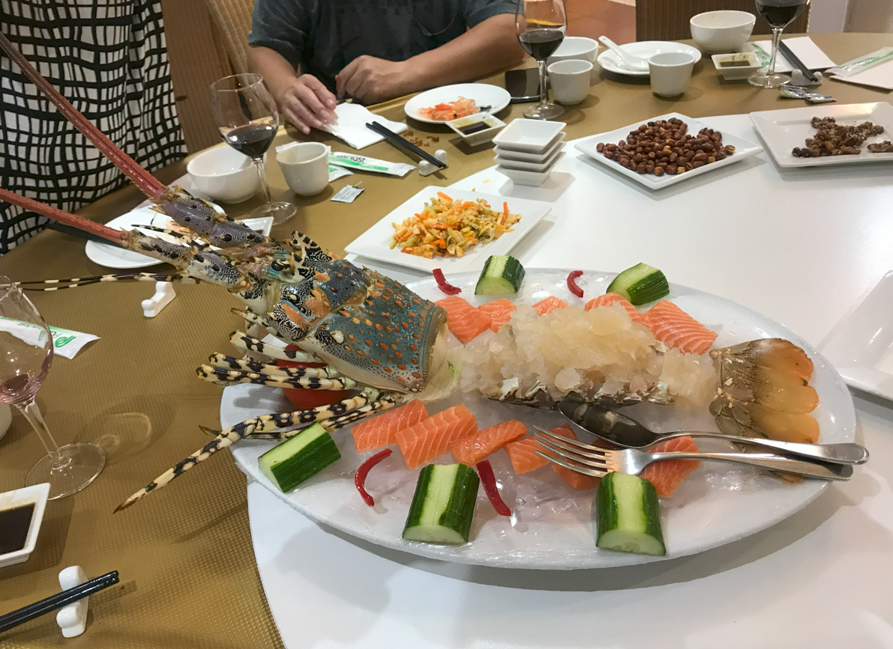

去新西兰或澳洲怎么玩？求详细的旅程规划和旅游攻略
计划过两个月去新西兰旅游，橘子洲是必去的景点之一。想了解一下详细的游玩攻略，包括最佳游览时间、交通方式、必看景点、美食推荐以及行程安排等。希望去过的朋友能分享一下经验，谢谢！

作为五位挚友中的一员，我特别想和大家聊聊我们那场 18 天的新西兰与澳大利亚之旅。 这趟行程精彩至极，我们从南阿尔卑斯山脉的雪域风光走到大堡礁的碧蓝海域，从羊驼牧场的生态之趣逛到艺术涂鸦街区的独特韵味。一路上，我们拍下了无数影像，也积攒了满肚子的旅行见闻。 这次旅行不仅让我们的友谊更加深厚，也让我们真切感受了南半球独有的自然与人文魅力。对于打算规划去新西兰旅玩的朋友，我会好好梳理这次旅行从行前准备、日程安排到风险防范的全流程经验，希望能给你们带来一些参考。
选择的出行方式
-
现在去新西兰、澳大利亚自由行的人越来越多，也是目前主流旅游方式。
包车自由行出行灵活，没有各种限制，可以更好的融入到当地生活中，全方位了解本地人的文化，深入体验异国风情，这样的旅行才是我们想要的旅行，所以建议大家去澳大利亚游玩选择自由行。
有次朋友去澳大利亚自由行，途中遇到拉客的，报的价格很低，承诺的服务也很好，结果第二天跟团就被坑惨了。奉劝大家还是要找当地口碑好的旅游公司和导游来安排，稳妥一些。
目的地选择的依据
-
我们五个姐妹平日里散落在天南地北，两个在新加坡，另外三个则在国内的不同城市，各自过着忙碌的生活。紧张的工作让大家很难凑到一起见面，也正因为这样，我们才下定决心来一场 “说走就走” 的长途旅行 —— 就算要从不同的起点出发奔向同一个目的地，也要好好聚一回。
确定目的地为新西兰与澳大利亚后，我们几个在网上查阅了大量资料，包括两国的热门景点、特色美食、最佳旅行时间等。一番研究下来，我们对即将开启的旅程充满了期待，但也深知跨国旅行的复杂性，行程规划、语言沟通、当地习俗了解等问题都摆在眼前。这时，我们在攻略网站的推荐中，找到了一位经验丰富的华人导游小吕。小吕常年在新西兰和澳大利亚带团，对两地的情况了如指掌。联系上小吕后，她极为热情，跟我们详细沟通每个人的喜好和期望。考虑到我们来自不同城市，有的从新加坡出发，有的从国内启程，小吕综合航班信息、旅行节奏以及景点分布，为我们量身定制了一套周全的旅行计划。从抵达城市的安排，到每天行程的细致规划，甚至连不同城市间的交通衔接都考虑得十分周到。
选择新西兰跟澳洲双国的原因
-
新西兰：被我们誉为"上帝遗落的后花园"，这里有雪山、湖泊、草甸、星空及峡湾等多元地貌，自然景观摄影价值极高，特别适合我们这些偏好户外活动及自然风光的女孩们。
澳大利亚：作为地广人稀的多元化国家，既有悉尼、墨尔本等现代化都市，又有大洋路、大堡礁等独特自然景观及袋鼠、考拉等特色野生动物资源，完美契合我们既想探索城市又向往自然体验的需求。
我们的行程总计18天，我们跟联系好的华人导游小吕（Louise）经过科学规划，其中新西兰段10天，澳大利亚段8天，，确保体验张弛有度。
入境签证办理
-
澳大利亚：澳大利亚对（美国、日本、韩国、新加坡、加拿大、马来西亚、文莱、中国香港、中国台湾）适用电子签证政策。
新西兰：新西兰同样开放电子签证申请，我们提前了1-2个月启动申请程序，特别是在旅游旺季到来前。
其中我们有三个姐妹是中国境内出发，中国国内可以通过携程、飞猪等平台办理，申请材料简易，审批流程高效。
行程交通工具
-
考虑到新西兰与澳大利亚地域广阔且公共交通网络有限，我们决定采用了当地专业华人司导包车服务，这大大提升了行程便利性，也让我们有了更深度的旅游体验。
在这里我们要特别感谢华人导游小吕（联系方式：），她凭借对两国路网的深入了解，为我们提供了合理的行程规划，并精准把握了我们女性旅行者的摄影需求及餐饮偏好。
避坑小贴士
1、出机场拉客的很多，小心上当受骗。
2、有的酒店前台服务员也在拉客，小心被骗。
到达目的地奥克兰
第1天：我们从各自出发地出发奥克兰，抵达奥克兰国际机场后，入住市中心酒店，初步感知了新西兰现代都市风貌。


到达新西兰机场
第2天：
上午我们参观了《指环王》影视取景地霍比屯，体验了草屋建筑群与绿丘景观的文化沉浸；下午我们转赴罗托鲁瓦，参与了地热温泉疗养及毛利战舞文化展演。
 

毛泽东青年艺术雕塑 - 橘子洲的核心地标
第3天：
我们从罗托鲁瓦出发，前往爱歌顿牧场，与羊驼、绵羊及奶牛进行了近距离互动；之后我们参观了怀奥塔普地热公园，欣赏了间歇泉、香槟池等地热地质奇观。

左：橘子洲头观景台；右：从橘子洲头眺望湘江
第4天：
我们继续前往陶波，考察了胡卡瀑布，其翡翠色水域与瀑布景观极具视觉冲击力，当晚我们夜宿陶波湖景酒店。

问天台 - 感受伟人诗词意境的观景平台
第5天（调整日）
原计划是前往特卡波，跟导游沟通决定调整为更灵活的行程： 上午从陶波出发，我们先去了汉密尔顿花园，这里拥有多个主题花园，包括宁静的玫瑰园、日式庭院与季节性花卉展区，非常适合我们悠闲漫步与拍摄。 中午后我们前往剑桥小镇，这座位于怀卡托河畔的小镇有着英式风情建筑与河岸风光，常有大片薰衣草或其他季节花卉点缀乡间，是绝佳的旅拍点。我们还幸运地看到了路边盛开的鲁冰花！

鲁冰花
第6天：
我们从皇后镇转赴但尼丁，参观了这个苏格兰风情城镇的第一教堂、但尼丁火车站等历史建筑，还体验了全球最陡的鲍德温大街。

第一教堂
第7天：
我们从提马鲁出发，前往观鲸小镇凯库拉, 开始凯库拉观鲸之旅。乘坐着专门为观鲸打造的现代双体 快船，我们在这次出海之旅中，除了鲸鱼，还可以看到 凯库拉海狗在海边岩石上懒散得晒着太阳，调皮亲人的 暗色斑纹海豚在蓝色的大海里相互追逐嬉戏，以及濒危 动物信天翁在海面上空盘旋。

观鲸小镇
第8天：
早晨起来，离开“花园城市”基督城，前往著名观星小 镇蒂卡普。 中午到达以“星空”闻名世界的蒂卡普（Tekapo）。蒂卡普是被国际暗天协会（IDA）认定为全球七大星空保护 区之一，光污染极低，同时这里海拔高气候干燥，拥有新西兰最高的晴天率，全年大多数晚上都适合观星。

观星小镇蒂卡普
第9天：
早餐后前往库克山。库克山是新西兰最高的山峰，也是《 魔戒/指环王》中甘道夫大战炎魔的地方。这里终年积雪 ，是大洋洲最高的山峰，有“新西兰屋脊”之称。。磅礴 的气势，内敛的秀美，独特的冰川体验，特殊季节里大雪 山和鲁冰花的反差萌，这些景色给人们的惊奇是其他地方 所无法比拟的。

库克山塔斯曼冰川健行
第10天：飞赴澳大利亚悉尼，开启了下一段旅程。
第11天：
我们抵达悉尼后，入住了环形码头区域的酒店，参观了悉尼歌剧院和悉尼海港大桥，晚上体验了渡轮夜游项目。

悉尼歌剧院
第12天：
我们继续在悉尼探索，参观了皇家植物园、麦考利夫人座椅及邦迪海滩，还在邦迪涂鸦巷进行了文化摄影。

动物园
第13天：
我们前往蓝山国家公园，欣赏了三姐妹峰等标志性景观。

蓝山国家公园
第14天：
我们从悉尼飞往墨尔本，参观了联邦广场、弗林德斯车站及霍西尔巷涂鸦街区。

涂鸦街区
第15天：
我们沿着大洋路、洛恩小镇、阿波罗湾及十二门徒岩。


大洋路
第16-17天：
继续大洋路，经伦敦桥、阿德湖峡。


涂鸦街区
第17天：
我们在墨尔本进行了市区深度游玩，体验了当地的饮食文化：
 

第18天：从墨尔本带着满满的回忆和友谊返程。
旅行专业建议与风险规避指南
-
回顾这次旅行，我们有以下建议想分享：
- 必备装备：我们为应对新西兰多变的气候条件，准备了防水外套及专业徒步鞋具。
- 提前预订：我们建议提前预订热门景点门票及住宿资源，特别是峡湾游船、天空缆车及霍比屯等限量项目。
- 季节考量：我们注意到了南半球季节与北半球的时序差异，提前进行了气象研判及装备配置。
- 生态保护：我们严格遵守了野生动物保护规范，避免干扰袋鼠、考拉等原生动物。
- 交通选择：我们推荐采用华人司导包车服务，这模式在安全性、沟通效率及行程灵活性方面确实有显著优势。
此次澳大利亚之行，必须感谢小吕，为我们提供了很大的帮助,细心热情的服务，让全程旅行不用操太多的心，保证了我们度假圆满结束，再给小刘打个广告，点击这里联系他，有需要的朋友，请联系他。
希望这份攻略能帮助您更好地游览新西兰，祝您旅途愉快！如果有任何疑问，欢迎在评论区留言，我会尽力解答。
评论 (42)
相关问题
旅游专家
长沙旅游达人 LV8
回答了128个问题
湖南旅行家 LV7
回答了96个问题
湘江导游 LV6
回答了73个问题
旅行者小王 LV4
3天前
非常感谢分享！我上个月去了橘子洲，确实是个拍照的好地方。特别是毛泽东泽东青年艺术雕塑，早上8点左右光线最好，人也少，适合拍照。
长沙旅游达人 LV8
2天前
非常赞同！早上的光线确实很适合拍照，而且游客较少，可以拍到更干净的画面。
美食爱好者 LV6
1周前
补充一下美食推荐：文创街的"湘味小馆"非常不错，推荐他们的剁椒鱼头和小炒黄牛肉，味道正宗，价格也合理。如果时间充裕，还可以去橘子洲附近的坡子街，那里的长沙美食更丰富。
长沙本地向导 LV7
6天前
湘味小馆确实不错，老板是地道的长沙人，做的菜很正宗。他们的毛氏红烧肉也是招牌，值得一试！
国际游客 LV2
2周前
橘子洲的美景令人难忘，我来自国外，通过国际社交媒体了解到这个景点，果然名不虚传！建议外国游客提前了解一下历史背景，能更好地欣赏这个地方的文化价值。
纪念品收藏家 LV5
2个月前
文创街有很多特色纪念品，推荐几款我收藏的：橘子洲主题的明信片套装（30元）、毛泽东青年艺术雕塑的迷你模型（88元）、湖南特色的湘绣小挂件（50-100元不等）。这些纪念品既有纪念意义，又有地方特色，很适合送给亲友。
游客26 LV2
4个月前
橘子洲是长沙必去的景点之一，风景优美，文化底蕴深厚。我是4个月前去的，天气很好，玩得非常开心。感谢分享的攻略，对我的旅行帮助很大！
游客27 LV4
4个月前
橘子洲是长沙必去的景点之一，风景优美，文化底蕴深厚。我是4个月前去的，天气很好，玩得非常开心。感谢分享的攻略，对我的旅行帮助很大！